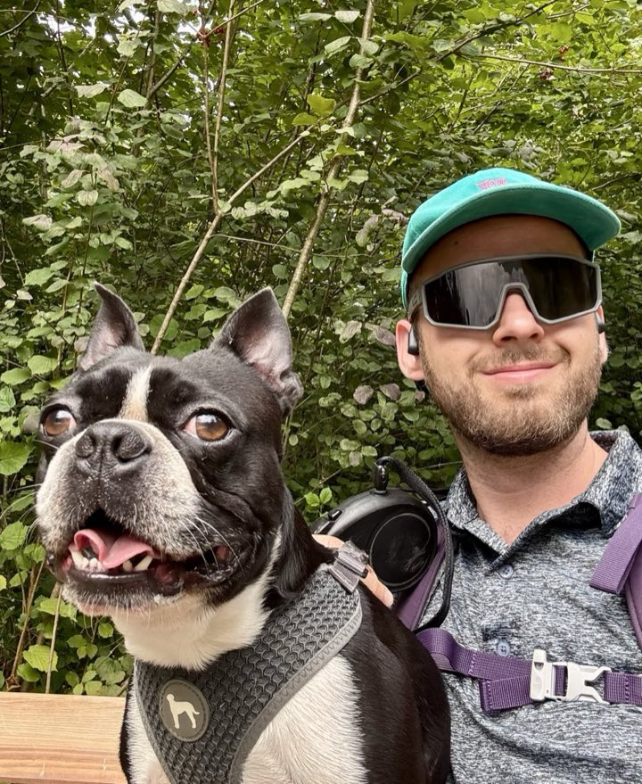

Tailor-made aplikace a dlouhodobé spolupráce
Stavím tailor-made aplikace pro malé a střední firmy, vedu digitální transformaci a doprovázím klienty od první analýzy přes implementaci až po provoz. Typicky dlouhodobé spolupráce.
Stack: PostgreSQL, MSSQL, SQL (CTE, rekurze), Python, JavaScript, REST API, JSON Schema, ArchiMate. Disciplíny: IT analýza, business analýza, solution architecture, systémová integrace, digitální transformace, SaaS produkty, AI tooling, veřejná správa, výrobní SME.
Python, JavaScript, SQL. Stavba SaaS produktů od datové vrstvy po UI. Důraz na malé, srozumitelné, udržitelné systémy.
PostgreSQL a MSSQL. Komplexní SQL (CTE, rekurze, deduplikace), návrh schémat, migrace, datová validace.
Propojování enterprise systémů, API návrh, JSON schema, ArchiMate modelování, BE/FE specifikace. Mosty mezi business požadavky a implementací.
Digitální transformace, IT strategie, vendor management, jednoúčelové aplikace, management consulting v rámci dlouhodobých spoluprací.
Lokální LLM inference na Apple Silicon, autonomní agentní systémy postavené nad Claude Code.
Stavím tailor-made aplikace pro malé a střední firmy, vedu digitální transformaci a doprovázím klienty od první analýzy přes implementaci až po provoz. Typicky dlouhodobé spolupráce.
Analýza, integrace a architektura informačních systémů státní správy — typicky jako externí konzultant ve spolupráci s etablovanými českými IT integrátory.

IT Analyst / Solution Architect
přesAricoma
Projekty pro veřejný sektor — analýza a architektura informačních systémů státní správy.
IT Analyst / Solution Architect
přesEuropean Code Factory
Projekty pro veřejný i soukromý sektor — analýza, integrace.
Digital Transformation Lead, interim CEO
přesin-house
Vedení digitální transformace a IT strategie ve výrobní skupině v severních Čechách. ERP/CRM implementace, vendor management.
Consultant, Senior Analyst
přesDeloitte CE
Bankovní a regulátorní sektor — analýza, RPA Center of Excellence, IT risk assessment.
IT konzultant na volné noze
přesvlastní
Tailor-made řešení pro SME — vývoj, implementace, dlouhodobé spolupráce.